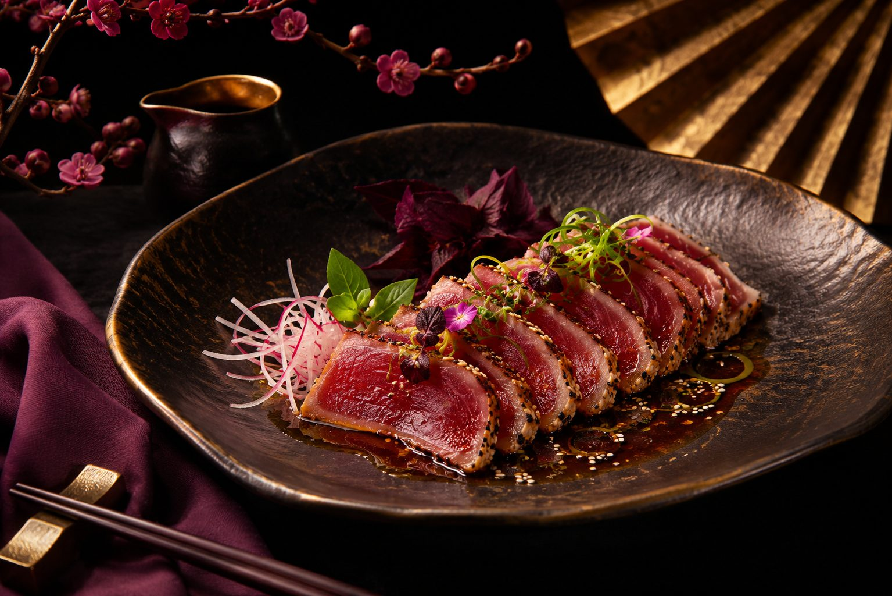
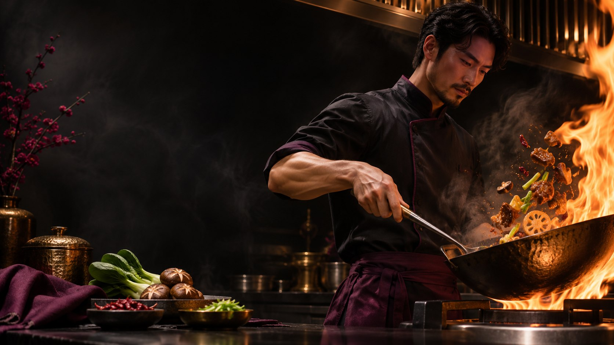
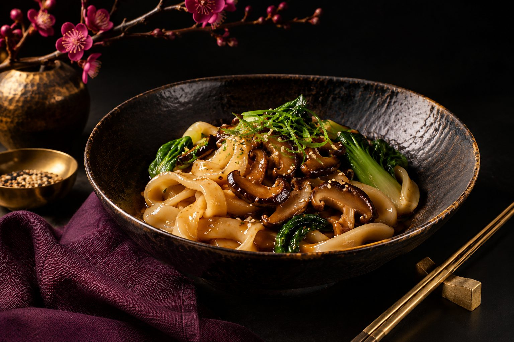
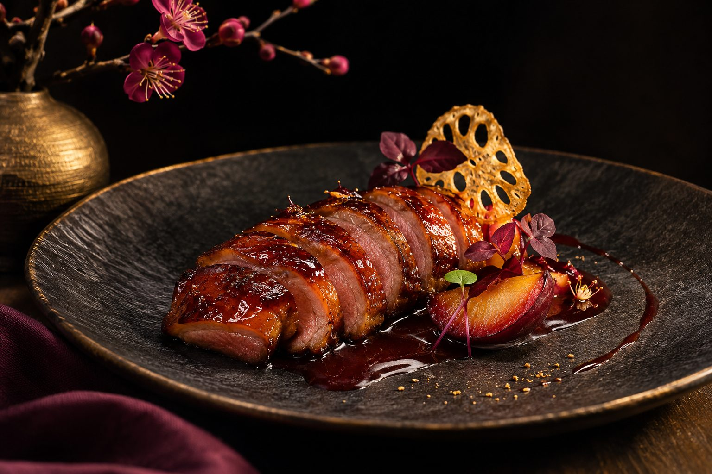
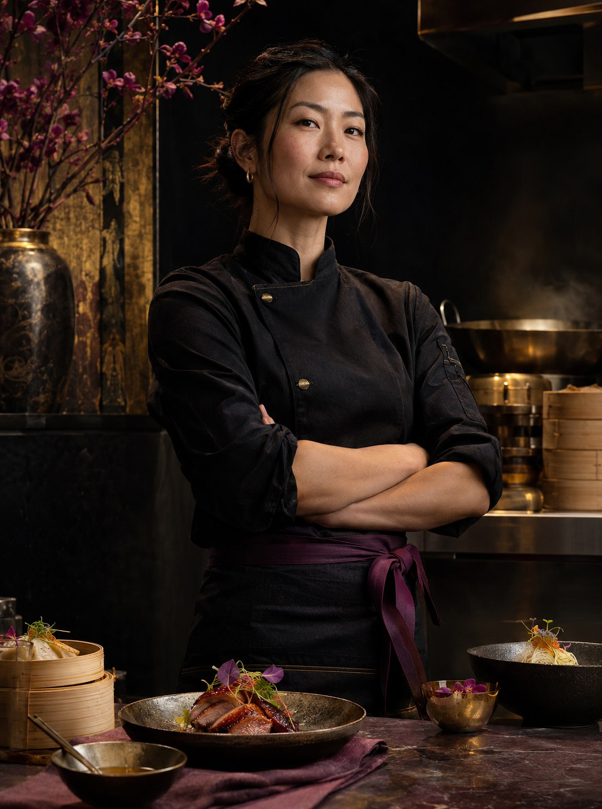
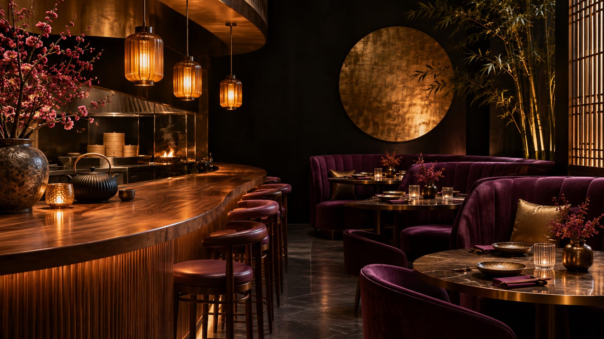

Madrid · Cocina asiática contemporánea
Fuego, wok
y sobremesa.
Wok al fuego vivo, brasa robata y cócteles de autor para compartir la noche.
De nuestra cocina
Platos de la casa

Udon al wok

Pato a la robata

La chef
Mika Sato
Mika trabaja con el calor directo, las fermentaciones y la acidez para dar a cada plato un final limpio.
Conoce a la chef
La experiencia
Una noche en WOOK
En la barra se agita el primer cóctel. Desde el comedor se ve el fuego de la robata. La mesa está puesta para pedir al centro.
Descubre el espacio- Lunes
- Cerrado
- Mar–jue
- 13:00–16:00 · 19:30–23:30
- Vie–sáb
- 13:00–16:00 · 19:30–00:30
- Domingo
- 13:00–17:00